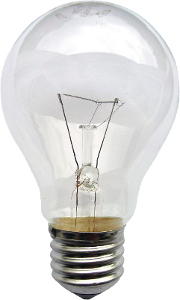
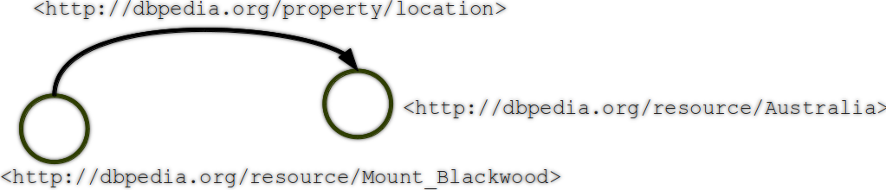

Your browser doesn't support the features required by impress.js, so you are presented with a simplified version of this presentation.
For the best experience please use the latest Chrome, Safari or Firefox browser.
Guidelines for using OpenLink Virtuoso as the database engine
for Semantic Web applications
Master Thesis
September 24, 2012
Łukasz Andrzej Grądzki
Supervised by Jesús Bermúdez de Andrés, Ph.D.
- Motivation
- Linked Data Principles
- Competing Solutions
- Overview of OpenLink Virtuoso
- Key Features
- Internal Structure
- Interfaces
- Practical Applications
- Data Import & SPARQL Queries
- Virtuoso Sponger
- Performance Assessment
- Real Use Cases
- Conclusions
Increasing popularity of Virtuoso

The lack of the definite guide for this software
What is the Semantic Web?
What technologies is it based on?
RDF - The Resource Description Framework:
- Universal data model
- Builds up the web of data
- Typed connections
- A specification of the meta-data model
- Information is represented as node-and-arc-labelled directed graphs
- A triple: { subject, predicate, object }
- Types of the RDF links:
- Relationship links
- Identity links
- Vocabulary links
- RDFS (RDF Schema) is a serialization standard intended to structure RDF resources
Ontologies:
- Don't have a universally accepted definition
- "An ontology is a formal specification of a shared conceptualization" by Tom Gruber
- A formal representation of a knowledge domain
- Composed of sets of concepts and relations between them
The SPARQL Protocol:
- Standardized query language for RDF graphs
- Based on the key words similar to the ones known from SQL
- SPARQL queries attempt to match patterns in the data web graph
How does an exemplary RDF triple look like?
<http://dbpedia.org/resource/Mount_Blackwood> <http://dbpedia.org/property/location> <http://dbpedia.org/resource/Australia>
"In RDF information is represented as node-and-arc-labelled directed graphs."

It's a presentation tool
inspired by the idea behind prezi.com
and based on the power of CSS3 transforms and transitions in modern browsers.